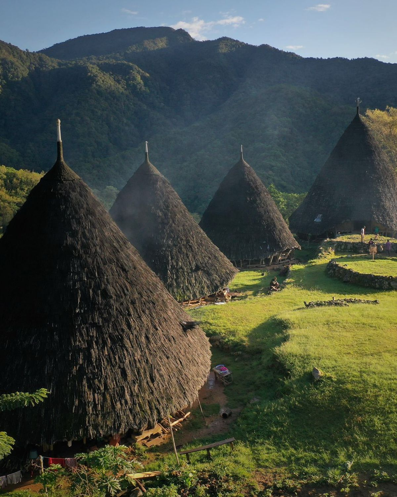

Galeri Keindahan Papua


Komentar Favorit
Tanya Jawab Umum
Apa keunikan budaya Papua?
Papua memiliki beragam suku dan adat istiadat, seperti tari perang, pesta bakar batu, dan seni ukir khas Asmat.
Kapan waktu terbaik mengunjungi Papua?
Bulan April–Oktober adalah waktu terbaik, karena cuaca cenderung cerah dan cocok untuk berwisata alam.
Apa destinasi populer di Papua?
Beberapa destinasi terkenal seperti Raja Ampat, Lembah Baliem, Danau Sentani, dan Pegunungan Jayawijaya.
Apa makanan gavorit di Papua?
Salah satu makanan favorit yaitu papeda.
Maria
“Papua sungguh indah! Budaya dan alamnya luar biasa mempesona.”
Johan
“Saya sangat kagum dengan keberagaman suku dan adat istiadat di Papua.”
Rina
“Pemandangan Raja Ampat tidak ada duanya di dunia. Luar biasa!”
Albert
“Papua adalah mutiara timur Indonesia yang sesungguhnya.”